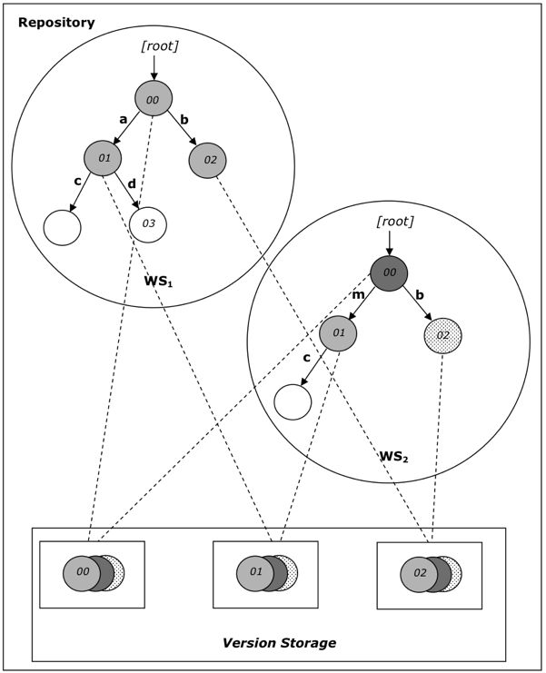

The following diagram illustrates a possible repository architecture.

This diagram shows a repository that supports versioning and contains two workspaces. The version storage is represented by the area in the bottom. It contains a version history for each versionable node in the repository. The versionable nodes in the workspaces are shown in various shadings. The nonversionable nodes are shown in white.
All versionable nodes are referenceable, though not all referenceable nodes are versionable (for example the node 03 in WS1 is referenceable, because it has a UUID, but it is not versionable). Both WS1 and WS2 also contain nonreferenceable nodes (the nodes c below 01).
In the diagram the version histories are represented by stacked circles of differing shades. Each versionable node shares its version history with its corresponding node in the other workspace.
At any given time a particular workspace may hold nodes based on various versions stored in version storage. In the diagram, WS1 holds nodes based on the “light gray” version of the nodes 00, 01 and 02. WS2, in contrast, has nodes based on the “dark gray” version of 00, the “light gray” version of 01 and the “dotted” version of 02.
Note that for the purposes of illustration, each version history is depicted as containing three versions. This is a simplification; in an actual system the version histories of distinct nodes may differ. Furthermore, in this picture, parent child relations within the version storage are not shown. See 8.2 Versioning for a more detailed description.